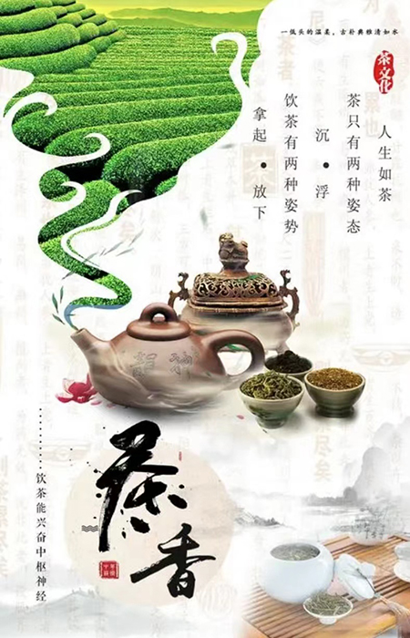

| 网站首页 | 企业展示 | 产品展示 | 茶叶文化 | 新闻动态 | 在线留言 | 联系我们 |
|  | 中国茶文化是中国制茶、饮茶的文化。中国是茶的故乡，中国人发现并利用茶，据说始于神农时代，少说也有4700多年了。直到现在，汉族还有民以茶代礼的风俗。潮州工夫茶作为中国茶文化的古典流派，集中了中国茶道文化的精粹，作为中国茶道的代表入选国家级非物质文化遗产。日本的煎茶道、中国台湾地区的泡茶道都来源于中国广东潮州的工夫茶。 作为开门七件事（柴米油盐酱醋茶）之一，饮茶在古代中国是非常普遍的。中华茶文化源远流长，博大精深，不但包含物质文化层面，还包含深厚的精神文明层次。唐代茶圣陆羽的茶经在历史上吹响了中华茶文化的号角。从此茶的精神渗透了宫廷和社会，深入中国的诗词、绘画、书法、宗教、医学。好几千年来中国不但积累了大量关于茶叶种植、生产的物质文化、更积累了丰富的有关茶的精神文化，这就是中国特有的茶文化，属于文化学范畴。 |
|